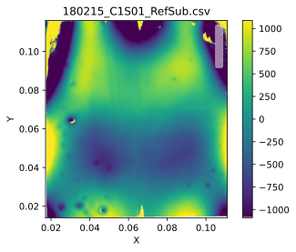
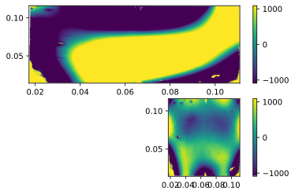

#2021/04/05 Tutorial on basic functions, first attempt of using VScode
import osUsing matplotlib backend: Qt5Agg
Populating the interactive namespace from numpy and matplotlibUsing matplotlib backend: Qt5Agg
Populating the interactive namespace from numpy and matplotlibPySurf library consists in a set of classes and functions reapresenting 2D data and operations on them.
The main class representing 2D data with x and y axis is Data2D object in pySurf.data2D_class. Data2D can be initialized by providing a matrix of 2-dimensional data and (optionally) x and y coordinates. Other options can be passed as well.
The object interface is built on top of a function library in module pySurf.data2D: for almnost each method there is a corresponding function that can be called with something like pySurf.data2D.function(data, x, y, ..).
Similarly, routines operating on profiles (y as a function of x as couples of vector x and y), are contained in class pyProfile.Profile and pyProfile.profile which have in many points interfaces similar to modules in pySurf.
Here we will focus on Data2D object interface.
A first way to initialize such an object is by passing directly 2D data, (optionally) coordinates and options.
Data and coordinates can be obtained back in any moment simply calling the object:
dd, xx, yy = D()
print(dd.shape,xx.shape,yy.shape)
print("Equal?", np.all(dd == data), np.all(x == xx), np.all(y ==yy))(300, 200) (200,) (300,)
Equal? True True TrueFunctions for reading common formats of 2D data are collected in pySurf.readers module. The structure and interface of readers is described elsewhere, a reader is essentially a function able to obtain data, x, y from a data file, however if the interface is correctly implemented, a reader from pySurf.readers.instrumentReader can be passed as argument to at object creation. In this case, additional information are automatically added to the object.
Basic operations like cropping or leveling can be applied by means of corresponding methods. Information about methods and options can be obtained by means of usual Python introspection methods.
Here some example:
<matplotlib.image.AxesImage at 0x1d76c775898>
plotting module contains commodity functions for plotting of data and comparisons, we use plotting.multiplots.compare_images to compare the original data with the modified version.
[<AxesSubplot:>, <AxesSubplot:>]